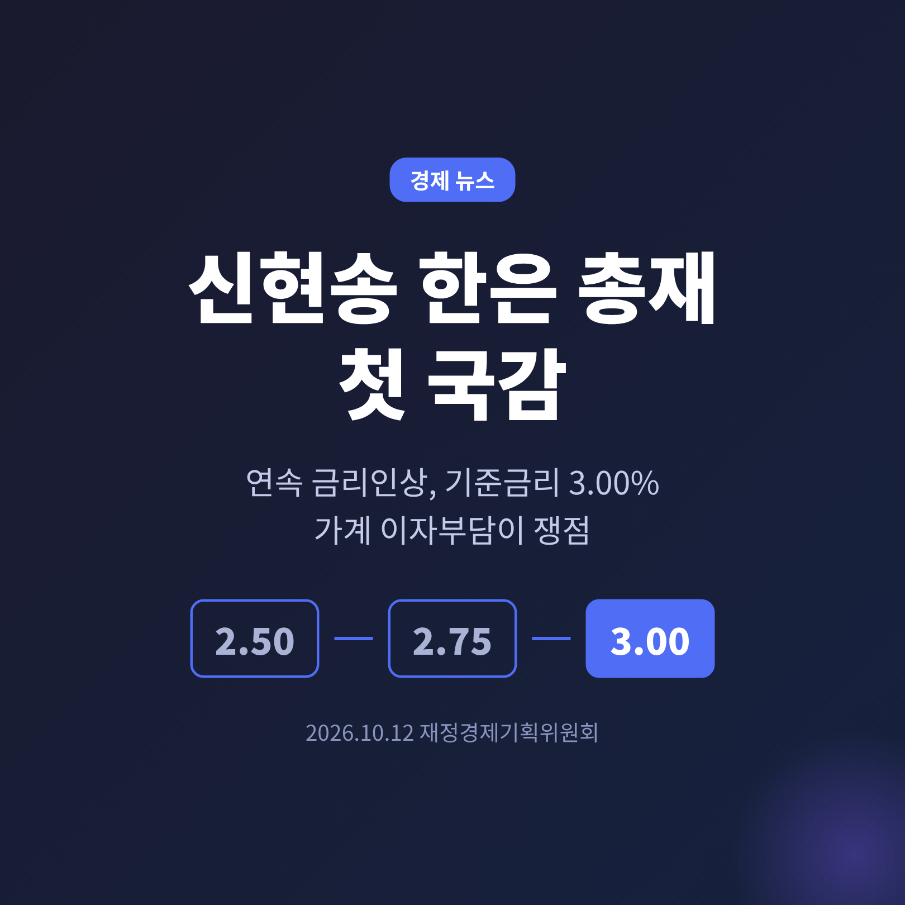
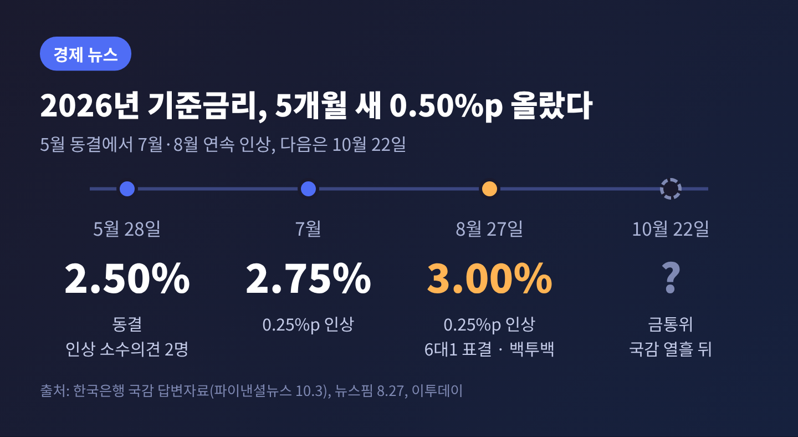
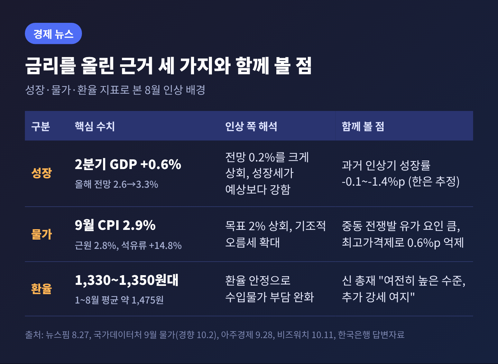
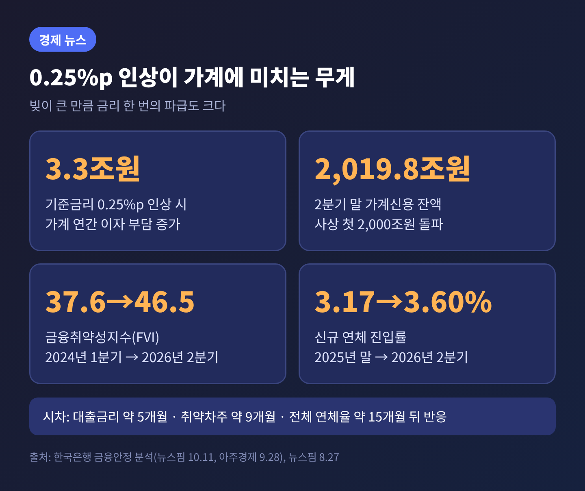
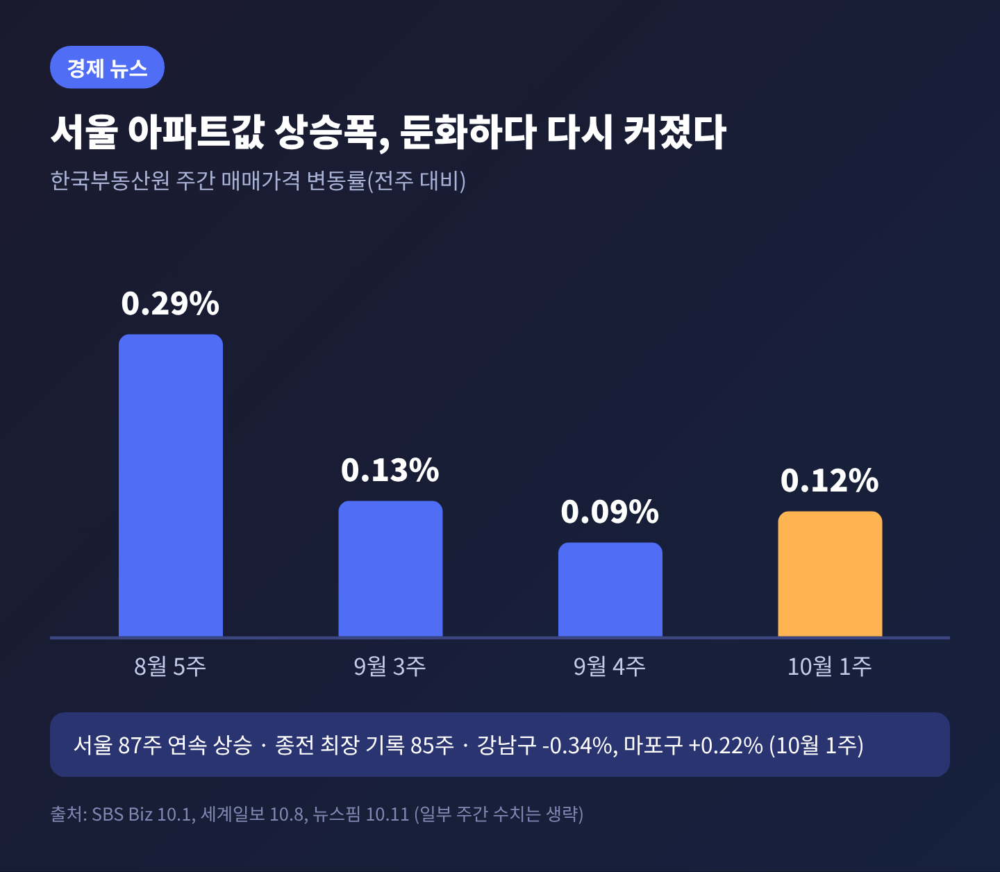
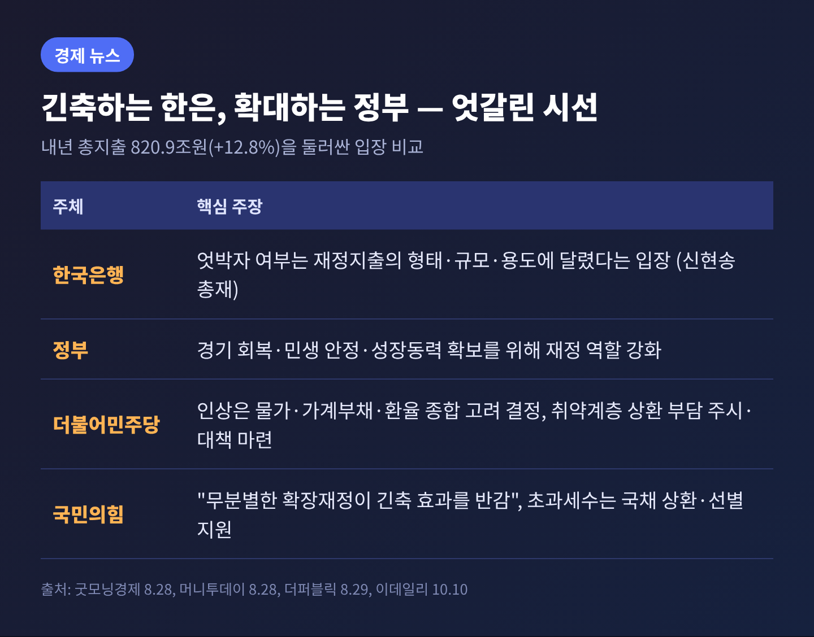

이번 글에서는 12일 열리는 신현송 한국은행 총재의 첫 국정감사에서 무엇이 쟁점이 될지 정리해 보겠습니다.
한은은 7월과 8월 두 달 연속 기준금리를 올려 연 3.00%가 됐고, 이 결정의 타당성과 가계 부담, 재정과의 엇박자가 질의의 중심에 설 전망입니다.
핵심만 먼저 말씀드리면, 쟁점은 "더 올릴 것인가"와 "그 비용을 누가 감당하는가" 두 가지입니다.
신현송 총재는 10월 12일(월) 국회 재정경제기획위원회 국정감사에 출석합니다. 4월 취임 후 첫 국감입니다. 같은 날 G20 재무장관·중앙은행총재 회의와 IMF·세계은행 연차총회 일정도 겹쳐 있습니다(이데일리, 10월 10일).
올해 국감은 6일에 시작해 27일까지 이어집니다. 한은 국감은 2주차 첫날입니다. 기준금리를 결정하는 금융통화위원회는 그로부터 열흘 뒤인 22일에 열립니다. 국감에서 오가는 말이 시장의 22일 기대에 영향을 줄 수 있는 구조입니다.
예상 질의는 크게 다섯 갈래입니다. 연속 인상의 배경과 추가 인상 여부, 취약계층의 이자 부담, 수도권 집값과 가계부채, 확장재정과의 정책 공조, 외환시장 안정입니다. 다만 이 글을 쓰는 11일 시점에는 국감 당일 발언이 나오지 않았습니다. 아래 내용은 지금까지 공개된 자료와 보도를 바탕으로 한 사전 정리입니다.

기준금리는 5월 2.50%로 동결됐습니다. 당시에도 위원 2명은 0.25%포인트 인상을 주장했습니다. 이후 7월에 2.75%, 8월 27일에 3.00%로 올랐습니다. 한은이 국회에 낸 답변자료는 이를 "3년 7개월 만의 백투백(연속) 인상"이라고 표현했습니다(파이낸셜뉴스, 10월 3일).
근거는 세 가지로 읽힙니다.
첫째는 성장입니다. 2분기 실질 GDP는 전기 대비 0.6% 늘어 한은의 5월 전망치 0.2%를 크게 웃돌았습니다. 한은은 올해 성장률 전망을 2.6%에서 3.3%로 올렸습니다.
둘째는 물가입니다. 9월 소비자물가는 1년 전보다 2.9% 올랐습니다. 한은 목표 2%를 웃돕니다. 식료품과 에너지를 뺀 근원물가는 2.8%였고, 석유류는 중동 전쟁의 여파로 14.8% 뛰었습니다(국가데이터처, 10월 2일 발표). 8월 3.1%에서 내려왔지만, 8월에는 통신요금 기저효과가 있었습니다. 이를 걷어내면 8월은 약 2.5%였고, 한은 관계자는 기조적 오름세가 "다소 확대"됐다고 평가했습니다.
셋째는 환율입니다. 한은은 답변자료에서 금리 인상이 환율 안정을 거쳐 수입물가 부담을 덜어줄 것으로 기대한다고 밝혔습니다. 원/달러 환율은 최근 1,330~1,350원대로, 올해 1~8월 평균 약 1,475원보다는 낮습니다.
신 총재는 8월 기자간담회에서 이렇게 말했습니다. "호미로 막을 것을 가래로 막는다는 표현이 있다." 늦게 대응할수록 정책 비용이 커진다는 뜻이었습니다(뉴스핌, 8월 27일).
이 결정은 시장의 예상과 달랐습니다. 이투데이가 조사한 전문가 13명 중 9명, 금융투자협회 채권 전문가 100명 중 79명이 동결을 점쳤습니다. 표결도 만장일치가 아니었습니다. 6명이 찬성했고, 황건일 위원이 동결 소수의견을 냈습니다.

한은 분석에 따르면 기준금리가 0.25%포인트 오르면 가계의 연간 이자 부담은 약 3조 3,000억원 늘어납니다. 올해 2분기 말 가계신용 잔액은 2,019조 8,000억원으로 처음 2,000조원을 넘었습니다. 빚이 큰 만큼 금리 한 번의 무게도 큽니다.
문제는 시차입니다. 은행 대출금리는 인상 약 5개월 뒤, 연체율은 약 15개월 뒤에 가장 크게 반응합니다. 취약차주와 중소기업은 약 9개월입니다. 지금 연체율이 안정적으로 보이는 것은 아직 인상 효과가 다 반영되지 않았기 때문일 수 있습니다.
실제로 지표는 엇갈립니다. 2분기 가계대출 연체율은 0.98%로 전분기보다 0.02%포인트 내렸습니다. 반면 취약차주 비중은 6.7%에서 6.8%로 올랐고, 취약 자영업자 연체율은 12.71%, 신규 연체 진입률은 2025년 말 3.17%에서 3.60%로 높아졌습니다. 금융취약성지수(FVI)도 2024년 1분기 37.6에서 2026년 2분기 46.5로 상승했습니다(뉴스핌, 10월 11일).
금통위 안에서도 이 대목은 이견의 지점이었습니다. 9월에 공개된 8월 회의 의사록 보도에서 동결을 주장한 황건일 위원은 취약 부문을 고려해야 한다는 취지로 전해졌습니다.

한은은 금리 인상이 수도권 주택 가격 상승세와 가계부채 증가세를 누그러뜨릴 것이라고 설명합니다. 한국부동산원 통계는 일단 둔화를 보여줬습니다. 서울 아파트 매매가는 8월 다섯째 주 주간 0.29% 올랐던 것이 9월 넷째 주 0.09%까지 5주 연속 둔화했습니다. 강남구(-0.56%)와 서초구(-0.33%), 송파구(-0.19%)는 하락했습니다.
다만 10월 첫째 주(5일 기준)에는 상승폭이 0.12%로 다시 커졌습니다. 서울은 2025년 2월부터 87주 연속 상승이며, 종전 최장 기록은 85주였습니다. 강남권은 내렸지만 마포구(0.22%), 서대문구(0.36%) 등 한강벨트와 강북권으로 오름세가 번졌습니다(세계일보, 10월 8일).
금리 인상 효과가 나타나는 중이라는 해석과, 한 주 지표만으로 판단하기엔 이르다는 해석이 모두 가능합니다. 한은도 실물 경제로의 파급에는 시차가 있다고 밝혔습니다. 금리와 정부의 대출 규제가 각각 어디까지 역할을 맡을지가 국감에서 다뤄질 대목입니다.

통화는 조이는데 재정은 푸는 모양새가 가장 날 선 정치 쟁점입니다. 정부는 내년 총지출을 올해보다 12.8% 늘린 820조 9,000억원으로 편성했습니다(이데일리). 정부는 경기 회복과 민생 안정, 성장동력 확보를 위해 재정의 역할이 필요하다는 입장입니다.
야당은 이를 정면으로 비판합니다. 국민의힘 최은석 원내수석대변인은 8월 28일 "정부의 무분별한 확장재정은 한국은행의 긴축 효과를 반감시키고"라고 논평했고, 반도체 호황으로 늘어난 세수는 국채 상환에 써야 한다고 주장했습니다. 다른 한편 더불어민주당 김민석 대표는 이번 인상이 물가·가계부채·환율을 종합 고려한 결정이라고 평가하면서, 금융취약계층의 상환 부담을 "주시"하고 필요하면 대책을 마련하겠다고 밝혔습니다.
양측의 강조점은 다릅니다. 야당은 재정 확대가 금리 인상의 효과를 깎는다고 보고, 여당은 인상의 부작용이 취약계층에 쏠리지 않게 하는 데 무게를 둡니다. 신 총재는 엇박자 여부가 재정지출의 형태와 규모, 용도에 달렸다고 답한 바 있습니다. 국감에서 이 답이 어디까지 구체화될지 지켜볼 만합니다.

시장의 시선은 22일 금통위에 쏠려 있습니다. 8월 금통위원들이 제시한 6개월 뒤 금리 전망의 중간값은 3.25%였습니다. 신 총재는 8월 간담회에서 남은 회의 중 한 차례 더 올리는 정도의 완만한 인상을 언급했습니다. 시장에서는 최종금리를 3.25~3.5%로 보는 시각이 있습니다.
그 사이 확인할 일정이 줄줄이 있습니다.
변수는 미국에서도 옵니다. 미국 10년물 국채금리는 7일 장중 5.36%를 넘어 2002년 이후 최고치를 기록했습니다. 한미 금리 환경이 환율에 어떤 압력을 줄지도 같이 살펴야 합니다. 국내 10월 물가는 한은이 "3% 안팎"의 높은 수준을 예상한 만큼, 물가가 꺾이지 않는다면 추가 인상 논거는 유지됩니다. 반대로 성장이 둔화되고 취약차주 지표가 나빠지면 속도 조절론에 힘이 실릴 것입니다.
한계도 분명히 해두겠습니다. 한은의 과거 분석에 따르면 2021~2023년 금리 인상은 성장률을 연 0.1~1.4%포인트 낮춘 것으로 추정됐습니다. 물가를 잡는 대가로 성장 둔화를 피하기 어려웠다는 한은의 설명입니다. 이번에도 같은 트레이드오프가 놓여 있습니다.
정리하면 이렇습니다.
12일 국감의 관건은 금리를 올린 이유보다, 올린 뒤의 비용을 어떻게 관리하겠느냐는 질문에 어떤 답이 나오느냐입니다.
"물가를 먼저 잡을 것인가, 취약한 가계를 먼저 지킬 것인가."
정답이 하나가 아니기에 국감에서 양쪽 논리를 모두 들어볼 필요가 있습니다. 22일 결정까지 남은 열흘 동안, 숫자가 어느 쪽 손을 들어주는지 차분히 지켜보시길 권합니다.
※ 이 글은 공개된 보도와 자료를 정리한 경제 뉴스 해설이며, 투자 권유가 아닙니다. 금리·환율·부동산과 관련한 판단과 책임은 독자 본인에게 있습니다.
출처: 이데일리(10.10), 뉴스핌(8.27·10.11), 파이낸셜뉴스(10.3), 이투데이(8.27·10.10), 경향신문(10.2), 코리아중앙데일리(10.2), 세계일보(10.8), SBS Biz(10.1), 아주경제(9.28), 비즈워치(10.11), 굿모닝경제(8.28), 머니투데이(8.28), 더퍼블릭(8.29)